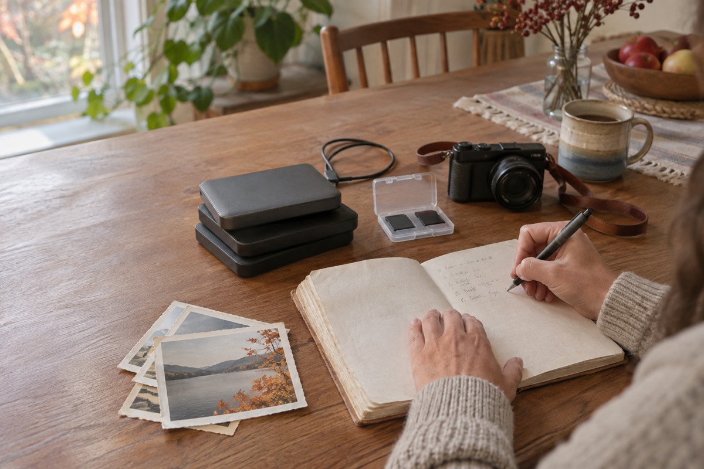

Momentro Guides · Organize footage
Video filenames and folders that still make sense in six months
A small naming habit that helps future you find the right clips—without turning family and travel memories into admin.

Make names for a person, not for a filing cabinet
Most of us do not forget a holiday or a family gathering. We forget which of five folders contains it. By the time “new videos,” “new videos final,” and “new videos final 2” appear, the original moment has already become harder to reach.
A good name does not need to be clever or technically perfect. It only needs to answer a simple question six months from now: what happened here, and roughly when?
If someone who was not there could understand the folder name, future you probably can too.
Use date, place or people, and one plain event
For most family and travel footage, this shape is enough:
YYYY-MM — place or people — event
For example: 2026-08 — coast — family weekend, 2026-10 — Riga — school concert, or 2026-11 — Mum and Dad — kitchen stories. The date keeps projects in a natural order; the rest gives them a human memory.
You do not need the exact day unless it genuinely helps. “2026-07 — Croatia” is kinder and more useful than a string of device codes.
Keep the inside of a project boring on purpose
Once you open a project folder, use the same three places each time:
- Intake for material gathered from phones, cards, drives and relatives.
- Selected for the smaller set you may turn into one film.
- Keep for the finished export and a short note about what it is.
The repeated structure means you do not have to invent a new system after every trip or celebration. You only decide what the project is called.
Rename only when the original name hides the moment
There is no prize for renaming every clip from every phone. Most device dates are useful enough. Rename the few files that would otherwise disappear: a voice message from a grandparent, a child’s first swim, the quick clip everyone keeps asking about.
Short labels are enough: grandad’s toast, first ferry, rain after dinner. They are clues, not a catalogue.
Let folders hold the context; let a film hold the story
A folder can contain all the footage from a trip. A finished film should not have to. Once your intake is understandable, choose the clips that tell one version of the day and keep the rest safely in the archive.
Momentro works with that selected set on your computer. Start analysis when you are ready, then get on with something else while the computer works through it. The time depends on your footage and your computer. Later you can review the draft, make one small adjustment if it helps, and export when it feels right.
Leave one note for later
When a project is done, add a tiny text note in the Keep folder: “Final film — 8 minutes — family weekend at the coast.” It sounds almost too simple, but that one line can save a surprising amount of searching later.
Organisation works best when it takes less energy than finding the clips again. Aim for understandable, not immaculate.
Start with a folder you can understand later.
Momentro helps you turn a selected set of family or travel clips into a draft you can review and export on your computer.